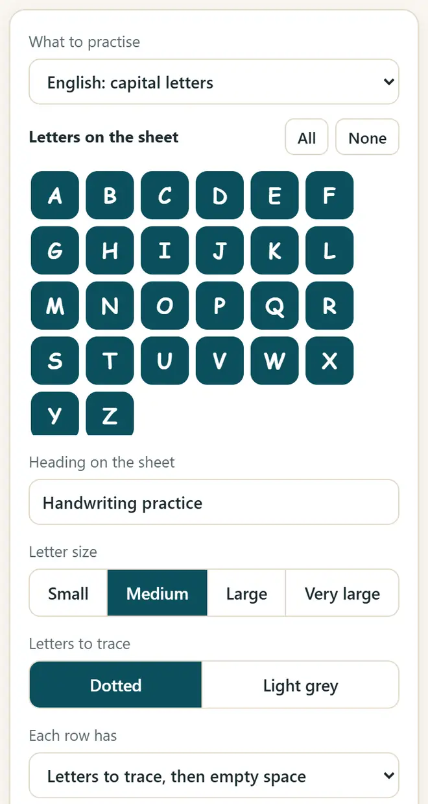

పిల్లల కోసం చేతిరాత అభ్యాస వర్క్షీట్లు: ఉచిత అక్షరాల ట్రేసింగ్ షీట్లు
ఇంటర్నెట్లో దొరికే ట్రేసింగ్ షీట్లలో చాలావరకు ఇంగ్లీష్లో మాత్రమే ఉంటాయి, లేదా లాగిన్ అడుగుతాయి. ఇక్కడ ఒక నిమిషంలో మీ సొంత షీట్ తయారు చేసుకోవచ్చు: ఇంగ్లీష్ అక్షరాలు, అంకెలు, తెలుగు అక్షరమాల లేదా మరో భారతీయ అక్షరమాల, లేదా మీ పిల్లల పేరు, చిన్న చేతులకు తగిన సైజులో.
సంక్షిప్త సమాధానం
చేతిరాత సాధన షీట్లు తెరవండి. “ఏది సాధన చేయాలి” లో ఇంగ్లీష్ అక్షరాలు, అంకెలు, ఒక భారతీయ అక్షరమాల లేదా “నా సొంత పదాలు లేదా పేరు” ఎంచుకోండి. అక్షరాలను ట్యాప్ చేసి ఈ రోజు అక్షరాలు మాత్రమే ఉంచి, “అక్షరం పరిమాణం” నిర్ణయించి, A4 పై ప్రింట్ చేయడానికి లేదా PDF సేవ్ చేయడానికి “ప్రింట్ / PDF గా సేవ్ చేయి” నొక్కండి.
5 దశల్లో ట్రేసింగ్ షీట్
-
ఏమి అభ్యాసం చేయాలో ఎంచుకోండి
చేతిరాత సాధన షీట్లు తెరవండి. “ఏది సాధన చేయాలి” లో “ఇంగ్లీష్: పెద్ద అక్షరాలు”, “ఇంగ్లీష్: చిన్న అక్షరాలు” లేదా “అంకెలు 0 నుండి 9” ఎంచుకోండి; లేదా తెలుగు, హిందీ, మరాఠీ, బెంగాలీ, గుజరాతీ, పంజాబీ, ఒడియా, తమిళం, కన్నడ, మలయాళం లేదా ఉర్దూ అక్షరాలు. ప్రివ్యూ వెంటనే మారుతుంది.
-
అక్షరాలను ఎంచుకోండి
ఒక అక్షరాన్ని ట్యాప్ చేస్తే అది షీట్ నుంచి తొలగిపోతుంది; మళ్లీ ట్యాప్ చేస్తే తిరిగి వస్తుంది. “అన్నీ”, “ఏదీ కాదు” త్వరగా పనిచేస్తాయి; చాలా భారతీయ అక్షరమాలల్లో “అచ్చులు” లేదా “హల్లులు” కూడా ఎంచుకోవచ్చు. ఒక రోజుకు నాలుగైదు అక్షరాలు చాలు.

అక్షరమాలను ఎంచుకుని, కావలసిన అక్షరాలను ట్యాప్ చేయండి. -
లేదా పిల్లల పేరు రాయండి
“నా సొంత పదాలు లేదా పేరు” ఎంచుకుని, ప్రతి వరుసలో ఒక మాట లేదా పేరు రాయండి. పిల్లలు ముందుగా తమ పేరు రాయడానికి ఇష్టపడతారు.
-
సైజు, శైలి నిర్ణయించండి
“అక్షరం పరిమాణం” లో చిన్న పిల్లలకు “చాలా పెద్దది” తో మొదలుపెట్టండి. పైన రాయడానికి “చుక్కలతో” లేదా “లేత బూడిద రంగు” అక్షరాలు ఎంచుకోండి; వరుసలో చివరివరకు అక్షరాలు ఉండాలా, సొంతంగా రాయడానికి ఖాళీ ఉండాలా అన్నదీ ఎంచుకోండి. “అక్షరం మొదలయ్యే చోట చుక్క చూపించు” ఇంగ్లీష్ అక్షరాలకు, అంకెలకు సహాయపడుతుంది. “పేరు, తేదీ లైన్లు చేర్చు” పిల్లల పేరు, తేదీకి చోటు ఇస్తుంది.
-
ప్రింట్ చేయండి లేదా PDF సేవ్ చేయండి
“ప్రింట్ / PDF గా సేవ్ చేయి” నొక్కి A4 కాగితం ఎంచుకోండి. షీట్ను ఉంచుకోవడానికి, లేదా WhatsApp లో పంపి దుకాణంలో ప్రింట్ తీయించడానికి, ప్రింటర్ స్థానంలో Save as PDF ఎంచుకోండి.

ట్రేసింగ్ షీట్, A4 పై ప్రింట్కు సిద్ధం.
చేతిరాత అభ్యాసానికి చిట్కాలు
- కొద్దిసేపు, కానీ రోజూ చేయడమే మంచిది: ఒకేసారి చాలాసేపు కూర్చోవడం కంటే రోజుకు 10 నుంచి 15 నిమిషాలు ఎక్కువ ఉపయోగపడతాయి.
- ప్రతి వరుసలో మొదటి అక్షరం నమూనా. పిల్లలు ముందు లేత అక్షరాలపై రాస్తారు; తర్వాత ఖాళీ చోట సొంతంగా రాస్తారు.
- చాలా పెద్ద అక్షరాలతో మొదలుపెట్టండి. పిల్లలు నేర్చుకునే కొద్దీ అక్షరాలను చిన్నవి చేసి, వరుసలు పెంచండి. ఇంగ్లీష్ షీట్లలో నాలుగు గీతలు ఉంటాయి; భారతీయ లిపులకు ఆ లిపికి తగిన గీతలు వస్తాయి.
- పెన్సిల్, కాగితానికి ముందు చిన్న పిల్లలను పెద్ద అక్షరాలను వేలితో, ఇసుకలో లేదా పలకపై రాయనివ్వండి. పిల్లలు పెన్సిల్ ఎలా పట్టుకుంటున్నారో గమనించండి; వారి ప్రయత్నాన్ని మెచ్చుకోండి.
కొత్త ఉచిత టూల్స్, హిందీలో AI పాఠాలు పొందండి
మా ఈమెయిల్ జాబితాలో చేరండి: కొత్త ఉచిత యాప్లు, కొత్త గైడ్లు, AI గురించి హిందీ వీడియో పాఠాల సమాచారం మీకు అందుతుంది. స్పామ్ లేదు.
పెద్దలకు (18+) మాత్రమే. ఎప్పుడైనా పేరు తీసివేయించుకోవచ్చు.
మేము ఈ టూల్స్ ఎందుకు సూచిస్తున్నాం
- అందరికీ ఉచితం: ప్రకటనలు లేవు, సైన్-అప్ లేదు, పెయిడ్ ప్లాన్ లేదు.
- ప్రైవేట్: మీ ఫైళ్లు, వివరాలు మీ సొంత డివైస్లోనే ఉంటాయి.
- ఫోన్, ల్యాప్టాప్ లేదా స్మార్ట్బోర్డ్లో పనిచేస్తాయి, ఒకసారి తెరిచాక ఇంటర్నెట్ లేకపోయినా.
- తెలుగు, హిందీ సహా 12 భాషల్లో.
వీడియో ద్వారా నేర్చుకోవడం ఇష్టమా? మా YouTube ఛానెల్లో AI, ఉచిత టూల్స్ గురించి హిందీ పాఠాలు చూడండి.
తరచుగా అడిగే ప్రశ్నలు
ఈ చేతిరాత వర్క్షీట్లు ఉచితమా?
అవును. ఎన్ని షీట్లైనా తయారు చేసి ప్రింట్ చేసుకోవచ్చు. సైన్-అప్ లేదు, వాటర్మార్క్ కూడా లేదు.
తెలుగు అక్షరమాల ట్రేసింగ్ షీట్లు తయారు చేయవచ్చా?
అవును. “ఏది సాధన చేయాలి” లో తెలుగు ఎంచుకుని, అచ్చులు (అ ఆ ఇ) లేదా హల్లులు (క ఖ గ) ఎంచుకోండి. హిందీ, మరాఠీ, బెంగాలీ, గుజరాతీ, పంజాబీ, ఒడియా, తమిళం, కన్నడ, మలయాళం, ఉర్దూకు కూడా ఇదే పద్ధతి.
పేరు రాసే ట్రేసింగ్ షీట్ తయారు చేయవచ్చా?
అవును. “నా సొంత పదాలు లేదా పేరు” ఎంచుకుని, పిల్లల పేరు లేదా కొన్ని మాటలు రాయండి; వరుసకు ఒకటి.
ఈ షీట్లు ఏ వయసు పిల్లలకు?
రాయడం మొదలుపెడుతున్న పిల్లలకు, సుమారుగా నర్సరీ నుంచి 2వ తరగతి వరకు; చేతిరాత చక్కగా చేసుకోవాలనుకునే పెద్ద పిల్లలకు కూడా. పిల్లలకు తగిన అక్షరం సైజు ఎంచుకోండి.
వేరే ఫోన్లో అక్షరాలు కొంచెం వేరుగా ఎందుకు కనిపిస్తాయి?
షీట్ మీ డివైస్లో ముందే ఉన్న ఫాంట్లను వాడుతుంది; కాబట్టి అక్షరాల ఆకారం డివైస్ను బట్టి కొంచెం మారవచ్చు. ప్రింట్ చేసే ముందు ప్రివ్యూ చూడండి.
ఉపయోగపడిందా?
స్నేహితుడికి, సహోద్యోగులకు లేదా మీ పాఠశాల WhatsApp గ్రూప్కు పంపండి.